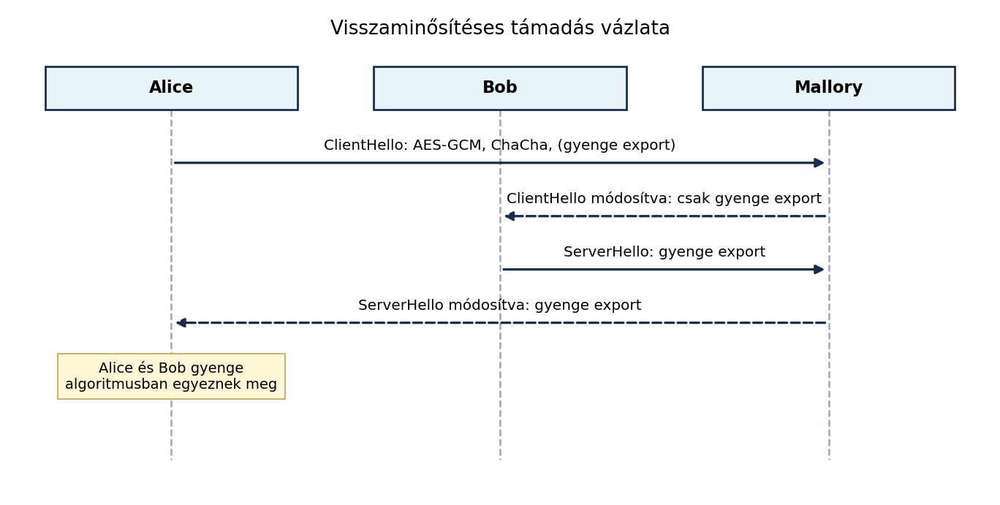

Egy kriptográfiai protokoll gyakran akkor bukik meg, amikor a benne használt primitívek (AES, HMAC, elliptikus görbe) önmagukban erősek, de az üzenetek sorrendje, a paraméterek hitelesítése vagy a kulcsok célhoz kötése hiányos. A támadó ilyenkor nem töri fel a titkosítást; egyszerűen kihasználja, hogy a felek nem ugyanazt a protokollt látják, vagy hogy egy érték átjátszható egy másik kontextusba. Ez a fejezet a protokollszintű hibák négy családját rendszerezi: visszaminősítés (downgrade), hiányzó bemenetellenőrzés, a transzkript- és kontextuskötés hiánya, valamint az algoritmuszavar. A tanulság mindig ugyanaz: a protokollüzeneteket éppúgy hitelesíteni kell, mint magát az adatot, és egy kulcs soha ne legyen kétféle szerepben felhasználható.
Tekintsünk egy TLS-hez hasonló kézfogást. Alice és Bob egyaránt támogat egy erős, modern algoritmust, de Mallory a hálózaton módosítja Alice ajánlatát úgy, hogy az csak egy gyenge, export szintű algoritmust tartalmazzon. Bob visszaküldi a saját válaszát, amelyet Mallory szintén módosít, így végül mindketten a gyenge algoritmust használják, miközben azt hiszik, hogy a másik fél nem támogat erősebbet.

A diagram azt mutatja, hogy a támadó nem feltétlenül fejti meg a forgalmat; elég, ha a feleket egy gyengébb, általa ismert irányba tereli.
Definíció (visszaminősítéses támadás, downgrade attack). Egy protokoll visszaminősítéses támadásnak van kitéve, ha egy aktív támadó úgy tudja az üzeneteket módosítani, elhagyni vagy beszúrni, hogy a felek végül egy gyengébb algoritmust, protokollverziót vagy paraméterkészletet használjanak, mint amit egyébként mindketten támogatnának, anélkül, hogy ezt észlelnék.
Definíció (transzkriptkötés, transcript binding). Egy protokoll akkor köti a transzkriptet, ha a végső kulcsot (vagy a hitelesítő címkét) a teljes addigi üzenetváltás egy hitelesített lenyomatából származtatja. A transzkriptkötés hiánya azt jelenti, hogy a támadó bizonyos üzeneteket megváltoztathat, és a felek mégis ugyanazt a kulcsot fogadják el.
Definíció (tartományelválasztás, domain separation). Tartományelválasztásnak nevezzük, amikor ugyanazt a hash-függvényt vagy kulcsszármaztató függvényt több célra is használjuk, de minden célhoz egy explicit, egyedi címkét (domain separator, info string) keverünk a bemenetbe, így a különböző célok kimenetei egymástól gyakorlatilag függetlennek tekinthetők.
Definíció (algoritmuszavar, algorithm confusion). Algoritmuszavarról akkor beszélünk, ha egy üzenet vagy token azt állítja magáról, hogy egy bizonyos algoritmussal van védve, de a felek ezt az állítást nem hitelesítik, és a támadó egy másik algoritmusra tudja átállítani a feldolgozást, gyakran ugyanazzal a kulcsanyaggal.
A visszaminősítés klasszikus példája a TLS 1.2 korában napvilágra került FREAK támadás. A történeti ok: az 1990-es években az USA exportkorlátozásai miatt a titkosítási szoftverek csak legfeljebb 512 bites RSA-kulcsokat használhattak. Később ezt a korlátozást feloldották, de számos szerver továbbra is támogatta az úgynevezett „export RSA” kulcscserét a régebbi kliensekkel való kompatibilitás miatt. A FREAK támadás során a kliens normál, erős RSA-kulcscserét ajánl, Mallory azonban a ClientHello üzenetet úgy módosítja, hogy a szerver azt lássa: a kliens export RSA-t kér. A szerver export csomagot választ, és egy 512 bites RSA-kulcsot küld, amelyet sok szerver egyszer generált, majd órákig-napokig újrahasznosított, így a támadó előre faktorizálhatta (512 bites modulus: néhány óra felhőben, ellenőrzendő). A másik kulcselem kliensoldali implementációs (állapotgép-) hiba volt: az érintett kliensek (például OpenSSL, SChannel, Secure Transport; ellenőrzendő) akkor is elfogadták az export ServerKeyExchange üzenetet, ha nem export csomagot kértek. Mallory az előre faktorizált modulusból kiszámítja a pre-master secretet, hamis Finished üzeneteket készít, és közbeékelődik. A felek a gyenge kulcscsere után már „megbíznak” a kapcsolatban, pedig minden forgalmuk Mallory kezén megy át. A FREAK 2015 körüli nyilvánosságra kerülése (az évszám és a pontos érintett verziók ellenőrzést igényelnek) rávilágított, hogy a visszaminősítési támadás nem a titkosítás törésén, hanem a protokoll tárgyalási szakaszának hitelesítetlenségén (és a régi export-támogatás megmaradásán) múlik.
Hasonló szerkezetű a Logjam támadás. Itt a
Diffie–Hellman-kulcscsere paraméterei a célpontok. TLS 1.2-ben és
korábban a véges testes DHE-csoportot a szerver választja, és a
ServerKeyExchange üzenetben küldi; a ClientHello csak
titkosítócsomag-listát tartalmaz, DH-csoportlistát nem. A támadó a
ClientHello titkosítócsomag-listáját DHE_EXPORT csomagra
cseréli; a szerver erre egy 512 bites DH-csoportot küld. Mivel a szerver
aláírása a DH-paramétereket hitelesíti, de a kiválasztott
titkosítócsomagot nem, a kliens a gyenge csoportot normál
DHE-paraméterként fogadja el. Az elterjedt 512 bites prímekre végzett
előszámítás után a diszkrét logaritmus a kézfogás ideje alatt megoldható
(a részletek és az évszám, 2015, ellenőrzendők). A Logjam tanulsága,
hogy a titkosítócsomag-választást is hitelesíteni kell, és az
export-szintű paramétereket ki kell vezetni.
A TLS 1.3 (RFC 8446) egy beépített
downgrade-védelmet vezet be. Ha a szerver támogatja a TLS 1.3-at, de egy
közbeékelő miatt kénytelen TLS 1.2-t vagy régebbit választani, akkor a
ServerHello.random mező utolsó 8 bájtja a DOWNGRD jelzést
tartalmazza. A kliens ezt a jelet felismeri, és megszakítja a
kapcsolatot. Így a felek észlelik, ha egy régebbi verzióra
kényszerítették őket, feltéve, hogy a támadó nem képes a
ServerHello.random mezőt is módosítani; ehhez viszont a szerver
aláírását kellene hamisítania, ami a hitelesített kézfogás miatt nem
lehetséges. Ez a megoldás a transzkriptkötés egy speciális esete: a
random mezőt a szerver aláírása hitelesíti, így a downgrade szándéka
ellenőrizhetővé válik.
A protokollok gyakran kapnak kívülről származó csoportelemeket, titkosított blokkokat vagy aláírásokat. Ha ezeket ellenőrzés nélkül használják, a támadó a protokoll logikáját kerüli meg.
(r, s)
érvényes, akkor (r, n-s) is érvényes, ahol n a
csoport rendje. Ha az ellenőrző kód nem követeli meg a kanonikus alakot
– ECDSA-nál például az ún. low-S szabályt, vagyis hogy
legyen (a tartományellenőrzés,
,
ehhez nem elég, mert
is ebbe esik; a szabály például a Bitcoin BIP 62/146 előírása,
ellenőrzendő) –, akkor a támadó egy érvényes aláírást egy másik, szintén
érvényes aláírásba alakíthat, ami például tranzakció-azonosítók
megváltoztatását teszi lehetővé. A bemenetellenőrzés itt azt jelenti: az
aláírás komponensei a megengedett tartományban legyenek, és az aláírás
kanonikus (például low-S) alakú legyen.A transzkriptkötés hiánya akkor válik támadhatóvá, ha a támadó a kézfogás egy részét megváltoztatja, de a végső kulcs változatlan marad. Két ismert példa:
EXT_INFO) törli; a végső
kulcs közben nem változik, a kulcsmegegyezés sikeresnek tűnik. A támadás
(a pontos CVE-azonosító és az érintett verziók ellenőrzést igényelnek)
rámutatott, hogy a MAC önmagában nem helyettesíti a
transzkript-hitelesítést. A javítás a „strict key exchange”: a
kulcscsere alatt minden nem várt csomag a kapcsolat bontását okozza, és
a NEWKEYS után a sorszámok nullázódnak, így a sorszám-eltolás nem
lehetséges.A kontextuskötés tágabb fogalom: a kulcsot nemcsak a kézfogásüzenetekhez, hanem a kulcs felhasználási céljához is kötni kell. Például ugyanaz a mesterkulcs ne származtasson egyszerre MAC-kulcsot és titkosítási kulcsot anélkül, hogy a két cél expliciten elválasztva legyen. Ennek hiányában egy komponensből származó kompromittálódás átterjedhet egy másikra, vagy egy érték átjátszható egy másik protokollfutásba.
A tartományelválasztás a kontextuskötés eszköze hash-függvények és kulcsszármaztató függvények esetén. Ahelyett, hogy ugyanazt a hash-t használnánk „aláírás” és „KDF” célra is, a bemenethez egy egyedi címkét adunk.
Példa. Tegyük fel, hogy egy protokoll egy mesterkulcsból MAC-kulcsot és titkosítási kulcsot szeretne származtatni. Ha a KDF csak a mesterkulcsot és egy rövid célszót használ, akkor a támadó esetleg kihasználhatja a hosszúságok átfedését. Ehelyett jobb, ha a célokat explicit módon elválasztjuk:
ahol az info mezőt a protokollnak kell egyértelműen
felépítenie. A HKDF maga nem kódolja a hosszt: az RFC 5869 az
info-t nyers bájtsorként fűzi a HMAC-bemenetbe; hosszmezőt
az alkalmazó protokoll tesz bele (például a TLS 1.3
HkdfLabel szerkezete: hossz, címkehossz, címke, kontextus).
Így a két kulcs nem lesz egymásból levezethető, és egy esetleges ütközés
a hash bemenetében nem okoz átfedést.
Továbbvitt eredmény. A tartományelválasztást használjuk a Hash-alapú aláírások: Lamport, Merkle, XMSS, SLH-DSA alfejezetben, ahol az aláírás-generálás során minden réteg és minden bit-index külön domainbe kerül. A 2. projekt: saját hitelesített kulcscsere-protokoll tervezése és elemzése alfejezetben pedig a protokolltervezési elvek részeként a domain separation az egyik kötelező ellenőrzőpont.
A JWT (JSON Web Token) gyakori hibaforrás az algoritmuszavarra. A
token három részből áll: fejléc, payload és aláírás. A fejléc
tartalmazza az alg mezőt, amely megmondja, milyen
algoritmussal kell ellenőrizni az aláírást (például HS256
vagy RS256). Ha a szerver az alg mezőt vakon
elfogadja, akkor a támadó a következőt teheti:
RS256-ról HS256-ra
módosítja.HS256 ellenőrzéshez a nyilvános RSA-kulcsot
használja HMAC-kulcsként (mert a HMAC szimmetrikus kulcsot igényel, és a
szerver kódja nem választja szét a kulcstípusokat).A támadó így tetszőleges admin: true payloaddal aláírt
tokent készíthet, anélkül, hogy a titkos kulcsot ismerné. A védekezés: a
szerver ne az alg mező alapján válasszon ellenőrző
algoritmust, hanem egy előre rögzített, kulcstípushoz kötött algoritmust
használjon; a JWT-könyvtárak általában kérik az algorithms
paraméter megadását, vagy a kulcs típusa alapján automatikusan
korlátozzák az elfogadott algoritmusokat.
A protokollszintű hibák egy része nem nyilvánvaló; éppen ezért léteznek formális elemző eszközök, mint a ProVerif vagy a Tamarin. Ezek az eszközök a protokollt egy algebrai modellben vizsgálják, és megkeresik azokat a támadási útvonalakat, amelyekben a támadó a definiált műveletekkel el tudja érni egy biztonsági cél megsértését. Az évek során számos, ma már klasszikus hibát így találtak meg: például a Needham–Schroeder nyilvános kulcsú protokollban a hiányzó identitáskötés miatt a támadó közbeékelődhet, vagy egyes hitelesítési protokollokban a nonce-ok újrahasználata miatt reflection attack válik lehetővé. A formális elemzés itt nem azt jelenti, hogy a támadó ténylegesen feltöri a titkosítást; a modellben a primitívek ideálisak, és a hibák a protokoll szerkezetéből adódnak. Ez a szemlélet közel áll a bizonyítható biztonság játékalapú definícióihoz, de a protokollüzenetek szintjén dolgozik. A könyv keretei nem engedik meg a Tamarin vagy ProVerif részletes bemutatását; a cél csupán annak megértése, hogy a protokolltervezés során a „mit tud a támadó?” kérdést üzenetről üzenetre kell feltenni.
A következő rövid kód azt mutatja, hogyan lehet ugyanabból a titkos bájtból két különböző célra kulcsot származtatni tartományelválasztással. A kód oktatási célú, nem éles használatra.
# OKTATÁSI CÉLRA – NEM ÉLES HASZNÁLATRA
import hmac, hashlib
def derive_key(secret: bytes, purpose: str) -> bytes:
# Rögzített előtag + 1 bájtos hosszmező + cél: egyértelmű kódolás.
p = purpose.encode("utf-8")
info = b"derive:" + len(p).to_bytes(1, "big") + p
# A HKDF info paraméterét modellezzük HMAC-ként.
return hmac.new(secret, info, hashlib.sha256).digest()
secret = b"shared-master-secret" # tesztvektor, valós rendszerben külön generálandó
k_mac = derive_key(secret, "MAC")
k_enc = derive_key(secret, "ENC")
print(k_mac.hex())
print(k_enc.hex())Várt kimenet (futtatva, Python 3
hmac/hashlib; a bemenet rögzített, ezért a
kimenet determinisztikus):
8fb9c474fa9c9a65cfc28488e4f736fa0161e515b21693fc63140b973f6a04d6
b2e33ba44827080bd52abe0576f57a1d0fe863e63632816e5d7abea902f27b44A kód lényege, hogy a purpose string beépítése nélkül
mindkét kulcs ugyanaz lenne, ha a KDF csak secret-ből
számolna. A domain separation biztosítja, hogy a MAC-kulcs
kompromittálódása ne tegye ki a titkosítási kulcsot, és fordítva.
info string és lehetőleg
hosszmező.alg mező) nincs hitelesítve, és a feldolgozó kód ennek
alapján választ ellenőrző eljárást. Ezzel a támadó a kulcs típusát
átértelmezheti. Helyes gyakorlat: az algoritmus a kulcshoz legyen kötve,
ne a bemenethez, vagy a bemenetben szereplő azonosítót hitelesíteni
kell.Recept (protokolltervezési ellenőrzőlista).
info címkét, amely
tartalmazza a protokoll nevét, a célt, a hosszokat és a verziót.A válaszok a ### Megoldások elején, „Önellenőrzés –
válaszok” alcím alatt találhatók.
1. feladat (A). Fogalmazd meg saját szavaiddal a transzkriptkötés definícióját, és adj egy példát, ahol a hiánya támadást tesz lehetővé.
2. feladat (A). Egy protokollban a szerver a kliens
által küldött ClientHello üzenetből kiválaszt egy
algoritmust, de a választást nem hitelesíti. Milyen támadás lehetséges,
és hogyan védekeznél?
3. feladat (B). Tervezz egy KDF-et, amely egy
mesterkulcsból két kulcsot származtat: k1 egy HMAC-kulcs,
k2 egy AES-GCM kulcs. Írd le a pontos HKDF-hívásokat domain
separationnal, és indokold, miért nem elég a
SHA-256(secret || "MAC") kifejezés.
4. feladat (B). A JWT algoritmuszavar támadásban a
támadó a nyilvános RSA-kulcsot HMAC-kulcsként használja. Írj egy rövid
Python-ellenőrző kódot, amely megmutatja, hogy ha a szerver az
alg mezőt vakon elfogadja, akkor a támadó tetszőleges
payloaddal aláírt tokent tud készíteni. (Elég a HMAC-számítás; a base64
kódolást egyszerűsítheted.)
5. feladat (C). Mutasd meg, hogy ha a KDF a célt
egyáltalán nem veszi figyelembe
(),
akkor az egyik kulcs kompromittálódása a másikat is felfedi; továbbá
mutass példát arra, hogy egyértelmű kódolás nélkül
(H(ctx || purpose), ahol ctx változó hosszú,
és a támadó befolyásolja) két különböző (kontextus, cél) pár azonos
kulcsot kaphat.
6. feladat (D). Tervezz egy egyszerű, két üzenetből álló hitelesített kulcscsere protokollt, amelyben a felek egy Diffie–Hellman értéket cserélnek, és a végső kulcsot a transzkript hash-éből származtatják. Mutasd meg, hogy ha a végső kulcs nem tartalmazza az üzenetek hash-ét, akkor a támadó egy üzenetet módosíthat anélkül, hogy a kulcs változna. Ez a feladat előkészíti a 2. projekt: saját hitelesített kulcscsere-protokoll tervezése és elemzése munkát.
DOWNGRD jelzést írja. A kliens ezt a jelet észleli, és
megszakítja a kapcsolatot. A jelet a szerver aláírása hitelesíti, így a
támadó nem tudja észrevétlenül eltávolítani.alg fejlécét RS256-ról HS256-ra
módosítja, és a szerver a nyilvános RSA-kulcsot HMAC-kulcsként
használja. Mivel a támadó ismeri a nyilvános kulcsot, saját
HMAC-aláírást készíthet. A védekezés az, hogy az algoritmusazonosítót
nem szabad a bemenetből vakon elfogadni; az ellenőrzéshez előre
rögzíteni kell az algoritmust, vagy a kulcs típusa alapján korlátozni
kell az elfogadott algoritmusokat.A transzkriptkötés azt jelenti, hogy a protokoll során létrejött végső kulcs a teljes addigi üzenetváltás hitelesített lenyomatából származik. Ha ez hiányzik, a támadó megváltoztathat bizonyos üzeneteket, miközben a kulcs változatlan marad, így a felek nem veszik észre a beavatkozást. Példa erre a Terrapin támadás SSH-ban: a támadó a kézfogás alatt csomagokat szúr be, majd a titkosított csatornából töröl, miközben a végső kulcs ugyanaz marad, mert a kulcsmegegyezés nem hitelesíti a csomagsorrendet.
Ha a szerver a kliens által küldött algoritmusajánlatból választ, de
a választást nem hitelesíti, akkor egy közbeékelő támadó módosíthatja az
ajánlatot, hogy az csak gyenge algoritmusokat tartalmazzon. A szerver
ekkor gyenge algoritmust választ, a kliens pedig ugyanezt fogadja el. A
védekezés: a kiválasztott algoritmust és paramétereket a kézfogás
hitelesített részébe kell foglalni, például a szerver aláírja a
választott algoritmust, vagy a végső kulcs levezetése tartalmazza a
választás hash-ét. Emellett a feleknek minimális biztonsági szintet kell
előírniuk, és a downgrade-jelet (pl. TLS 1.3 DOWNGRD)
figyelniük kell.
A helyes HKDF-alapú levezetés:
# OKTATÁSI CÉLRA – NEM ÉLES HASZNÁLATRA
from cryptography.hazmat.primitives.kdf.hkdf import HKDF
from cryptography.hazmat.primitives import hashes
import os
# Tegyük fel, hogy van egy shared_secret bájtstring.
shared_secret = os.urandom(32) # valós rendszerben a kulcscsere kimenete
# HKDF domain separationnel
hkdf_mac = HKDF(algorithm=hashes.SHA256(), length=32, salt=None,
info=b"my-protocol/v1/MAC")
hkdf_enc = HKDF(algorithm=hashes.SHA256(), length=32, salt=None,
info=b"my-protocol/v1/ENC")
k_mac = hkdf_mac.derive(shared_secret)
k_enc = hkdf_enc.derive(shared_secret)
print(k_mac == k_enc) # FalseA SHA-256(secret || "MAC") azért nem elég, mert a
secret és a "MAC" hossza nem egyértelműen
kódolt. Ha például a secret értéke b"abc" és a
cél "MAC", akkor a bemenet abcMAC; ha a
secret értéke b"ab" és a cél
"cMAC", akkor ugyanaz a bemenet, tehát a két különböző
kulcs azonos lenne. Ez ütközést okozhat, és a tartományok nem lesznek
elválasztva. A HKDF maga nem kódolja a hosszt; az info
mezőt a protokollnak kell egyértelműen felépítenie (például a TLS 1.3
HkdfLabel szerkezetével: hossz, címkehossz, címke,
kontextus), így az ilyen kétértelműség elkerülhető. A gyengeség akkor
valódi, ha a secret előtt vagy után támadó által
befolyásolt, változó hosszú mező áll; rögzített titok mellett a
MAC és ENC kimenet különbözik. Emellett a
SHA-256(secret || címke) alak hosszkiterjesztési
szempontból sem tiszta PRF-konstrukció, ezért HMAC/HKDF kell.
Az alábbi kód szemlélteti az algoritmuszavart egy toy
JWT-ellenőrzőben. A public_key szimulálja a szerver
nyilvános RSA-kulcsát, amelyet a hibás szerver HMAC-kulcsként
használ.
# OKTATÁSI CÉLRA – NEM ÉLES HASZNÁLATRA
import hmac, hashlib, base64, json
def toy_verify(token: str, public_key: bytes) -> bool:
header_b64, payload_b64, sig_b64 = token.split('.')
# A base64 padding visszaállítása
header = json.loads(base64.urlsafe_b64decode(header_b64 + '=' * (-len(header_b64) % 4)))
signing_input = f"{header_b64}.{payload_b64}".encode()
if header['alg'] == 'HS256':
expected = base64.urlsafe_b64encode(
hmac.new(public_key, signing_input, hashlib.sha256).digest()
).rstrip(b'=').decode()
return hmac.compare_digest(sig_b64, expected)
# RS256 ellenőrzés itt elhanyagolva
return False
# A támadó által ismert nyilvános kulcs (valójában PEM string lenne)
public_key = b"nyilvanos-kulcs-pem" # szimbolikus
# Támadó által generált token HS256-tal
header = {"alg": "HS256"}
payload = {"admin": True}
header_b64 = base64.urlsafe_b64encode(json.dumps(header).encode()).rstrip(b'=').decode()
payload_b64 = base64.urlsafe_b64encode(json.dumps(payload).encode()).rstrip(b'=').decode()
signing_input = f"{header_b64}.{payload_b64}".encode()
sig = base64.urlsafe_b64encode(
hmac.new(public_key, signing_input, hashlib.sha256).digest()
).rstrip(b'=').decode()
token = f"{header_b64}.{payload_b64}.{sig}"
print(toy_verify(token, public_key)) # True, mert a szerver a nyilvános kulcsot HMAC-kulcsként használjaA kód rávilágít arra, hogy ha a szerver az alg mezőt
vakon elfogadja, a támadó a nyilvános kulccsal HMAC-aláírást készít, és
a szerver azt érvényesnek fogadja el. A valódi védekezés az, hogy a
JWT-ellenőrző függvény csak az előre megengedett algoritmusokat fogadja
el, és a kulcs típusa alapján nem engedi át a HMAC-ot RSA-kulccsal.
Ha , akkor ismerete triviálisan ismeretét jelenti: a MAC-kulcs kompromittálódása a titkosítási kulcsot is felfedi, és fordítva.
Kétértelmű kódolás esetén legyen
.
A ("shared", "MAC") és a ("sharedM", "AC") pár
ugyanazt az összefűzött bemenetet, b"sharedMAC"-ot adja,
tehát azonos kulcsot. Ez kontextusütközés: két különböző (kontextus,
cél) pár ugyanazt a kulcsot kapja. Nem azt jelenti, hogy
-ből
kiszámítható: ha
véletlen orákulumként viselkedik,
-ből
-re
semmi nem következik. A védekezés: egyértelmű kódolás (rögzített
hosszmező vagy elválasztó) és egyedi címke.
Tervezzünk egy két üzenetes DH-kulcscserét. Alice generál egy
a titkos kitevőt, és elküldi A = g^a mod p
értéket. Bob generál b-t, elküldi
B = g^b mod p-t, és kiszámítja
K = B^a = A^b-t. Legyen az 1. üzenet
,
a 2. üzenet
,
a kulcs
.
Mallory az 1. üzenetben lecserélheti az
listát (gyengébbre) vagy az
mezőt, mert ezek nem kerülnek
-ba:
a két fél ugyanazt a
-t
kapja, de eltérő transzkriptet lát (Bob azt hiszi, Carollal beszél, vagy
gyengébb algoritmust választ). Javítás:
,
és a felek ezt egy kulcsmegerősítő üzenettel (például
)
vagy a transzkriptre vonatkozó aláírással ellenőrzik. Megjegyzés: ha
Mallory magát
-t
vagy
-t
cseréli ki, a felek kulcsa különbözik
(
és
);
ez ellen a hitelesítés (aláírás) véd, nem a transzkript-hash. A
önmagában semmit sem véd, ha a felek nem hitelesítik egymást. Ez a
feladat előkészíti a 2. projekt: saját hitelesített
kulcscsere-protokoll tervezése és elemzése munkát, ahol ezt az elvet
alkalmazzuk.
A protokollszintű hibák akkor jelentkeznek, amikor a primitívek erősek, de a protokoll üzenetváltása, paraméterválasztása vagy kulcshasználata nem hitelesített. A visszaminősítéses támadás (FREAK, Logjam) során a támadó gyenge algoritmusra kényszeríti a feleket, ha a választott algoritmust nem hitelesítik. A bemenetellenőrzés hiánya érvénytelen pontok, padding oracle vagy aláírás-malleabilitás révén szivárogtat információt. A transzkriptkötés hiánya (Terrapin, 3SHAKE) lehetővé teszi üzenetek kihagyását vagy módosítását a kulcs változása nélkül. A tartományelválasztás biztosítja, hogy ugyanaz a hash vagy KDF több célra is biztonságosan használható legyen, egyedi címkével és hosszmezővel. Az algoritmuszavar (JWT) rámutat, hogy az algoritmusazonosítót nem szabad vakon elfogadni; a kulcs típusa és az algoritmus összekötése kötelező. Továbbvitt eredmények: a tartományelválasztást alkalmazzuk a Hash-alapú aláírások: Lamport, Merkle, XMSS, SLH-DSA alfejezetben, a protokolltervezési elveket pedig a 2. projekt: saját hitelesített kulcscsere-protokoll tervezése és elemzése és a A kriptográfia fogalmi térképe és döntési fája alfejezetek használják. A protokolltervezés során mindig ellenőrizendő: a transzkript hitelesítve legyen, a bemenetek validálva, a domainek elválasztva, és a visszaminősítés észlelhető.
A fejezet a TLS 1.3 (RFC 8446), a FREAK, Logjam, Terrapin, 3SHAKE és a JWT algoritmuszavar témáira épít. Az RFC 8446-ra való hivatkozás általánosságban elfogadott; a konkrét szakaszok és a downgrade-jelzés pontos bájtjai ellenőrzést igényelnek. A FREAK, Logjam és Terrapin támadások évszámai, CVE-azonosítói és az érintett verziók ellenőrzést igényelnek. A JWT algoritmuszavar leírása általános ismertetés; a konkrét könyvtárak viselkedése a verziótól függ, ezért a gyakorlatban a használt könyvtár dokumentációját kell ellenőrizni. Formális protokollverifikációs eszközök (ProVerif, Tamarin) csak említés szintjén jelennek meg.